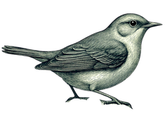

Knightingale
Luscinia megarhynchos · fam. Muscicapidae · ord. Dictation Daemons
Voice dictation that minds its own business.
One command. No clone, no compile.
Prebuilt binaries for every habitat. Checksums signed with sigstore. The daemon weighs 15–30 MB and sleeps at 10–40 MB resident.
Nine species, one genus.
Pick a cloud or stay local — swap providers by editing one variable.
Bring your own key
Groq, OpenAI, Deepinfra, Fireworks, Lemonfox, SambaNova, Azure — or any self-hosted OpenAI-compatible server.
Or run it on-device
whisper.cpp via whisper-rs; vulkan, cuda, and metal flags. tiny.en is real-time on CPU.
Smart defaults
knightingale model recommend reads your CPU, RAM, GPU and names the right checkpoint for the machine it's on.
| № | Provider | Default model |
|---|---|---|
| 01 | groq type sp. | whisper-large-v3-turbo |
| 02 | openai | whisper-1 |
| 03 | deepinfra | whisper-large-v3-turbo |
| 04 | fireworks | whisper-v3-turbo |
| 05 | lemonfox | whisper-1 |
| 06 | sambanova | Whisper-Large-v3 |
| 07 | azure | per deployment |
| 08 | custom | self-hosted |
| 09 | local | whisper.cpp on-device |
“No telemetry of any kind. No metrics, no analytics, no phone-home. Audio is sent only to the endpoint you configured, with your key, and nowhere else.”
— sworn in the source; grep it for reqwest and count one client.

© Shatil Khan · MIT licensed · set in Fraunces & EB Garamond · no birds were digitised without affection